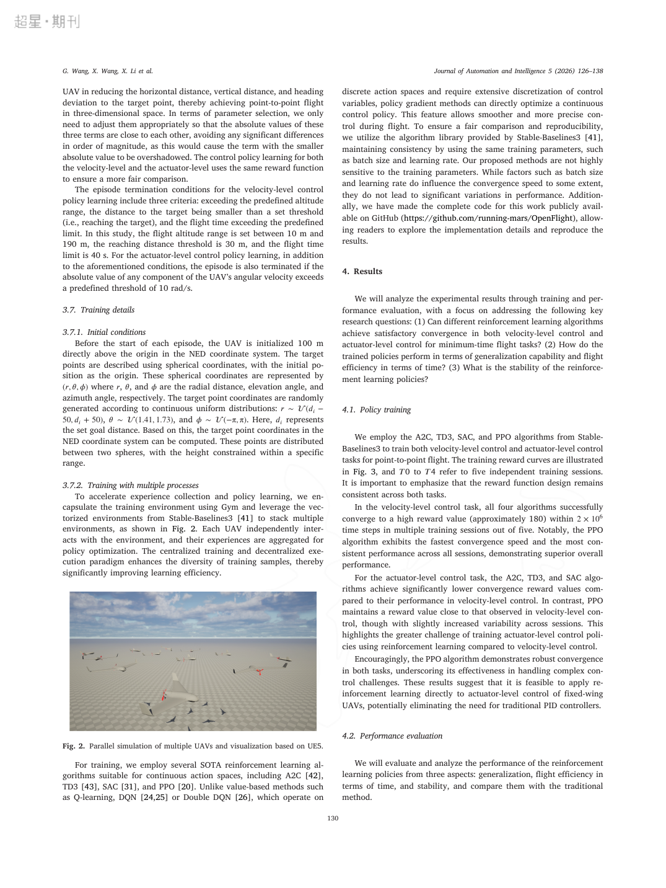

三维空间固定翼无人机时间最优飞行控制：高保真 6-DOF 动力学 + 强化学习
| 作者 | Guanzheng Wang（王冠政，第一作者）、Xiangke Wang（王祥科）、Xiaoxin Li（李晓鑫）、Zhihong Liu（刘志宏，通讯）、Zhiqiang Miao（缪志强） |
| 单位 | 国防科技大学 智能科学学院（Wang/X. Wang/Li/Liu）；装备状态感知与智能保障全国重点实验室（Wang/X. Wang/Li/Liu）；湖南大学 电气与信息工程学院（Miao） |
| 期刊 | Journal of Automation and Intelligence（KeAi/ Elsevier），2026, Vol. 5, pp. 126–138；DOI: 10.1016/j.jai.2025.11.007；2025-07-29 投稿 / 2025-11-23 接收 |
| 类型 | Research article（开放获取 + 代码开源 github.com/running-mars/OpenFlight） |
| 一句话 | 把固定翼的控制层级从"速度级（外环 + PID）"推进到"执行器级（副翼/升降舵/油门）"，在 JSBSim 6-DOF 高保真动力学里用 PPO 直接学时间最优飞行：64 个 500 m 目标点平均 20.24 s 到达，比速度级 PPO 快 22.0%，比改进 Dubins 曲线快 27.6%，且首次在固定翼时间最优任务上做到执行器级端到端控制。 |
| 创新点 | 具体做法 | 它真正解决的问题 |
|---|---|---|
| ① 执行器级控制（ALC） | 策略网络直接输出 $c_a$（副翼）、$c_e$（升降舵）、$c_t$（油门），去掉自驾仪/PID 中间层 | 速度级控制无法表达"大角速度 + 低空速 + 急转"这类极限机动；ALC 让策略自己发现欠驱动强耦合下的最优 maneuvers |
| ② 统一 POMDP 框架下的 VLC/ALC 对照 | 同一奖励、同一终止条件、同一算法库（SB3），只换动作空间与观测维度 | 让"层级选择"成为唯一变量——这是能得出"22% 提升来自控制层级"这一结论的实验设计前提 |
| ③ 高保真 6-DOF + 可开关渲染的仿真栈 | JSBSim（Skywalker X8 气动模型）+ Gym 封装 + SB3 SubprocVecEnv（16 进程）+ 可选 UE5 渲染 | 用"轻训练 / 重验证"的双模式，把仿真器的保真度和吞吐从对立变成可调 |
| ④ 与 Dubins / MPC 的强基线对比 | 改进三维 Dubins（14/20/26 m/s 三档巡航）+ 单轨模型 MPC（SLSQP，10 步 / 0.33 s 预测域，30 Hz） | 证明 RL 的收益不是"打败了弱基线"：ALC 也略胜 MPC（20.24 s vs 25.50 s） |
固定翼 RL 控制此前基本停在姿态内环（pitch/roll）或航向 + 高度外环：Richter 用 DQN/DDQN 做离散动作的姿态控制；Chowdhury & Keshmiri、Bøhn 等用 PPO/SAC 直接控舵面但目标是"稳定跟踪"而非"最短时间"，且 Bøhn 的工作已上真机。本文的差异点是把优化目标换成时间——一旦目标变成 min $t_f$，策略就必须榨干耦合动力学（转弯时降速、俯冲换速度），这正是 ALC 相对 VLC 的优势区间。
flowchart TB
subgraph PHYS["物理层 · JSBSim 6-DOF"]
X8["Skywalker X8 气动模型
风洞 + CFD 系数 · x8.xml"]
FDM["FGFDMExec 数值积分
sim_frequency_hz = 30"]
ATMO["大气 / 重力 / 推力模型"]
end
subgraph WRAP["封装层 · Gym + OpenFlight"]
ENV["gym.Env: airgym:jsbsim-uni-uav-sample-v1/v2/v3"]
VEC["SB3 SubprocVecEnv · num_envs = 16"]
NORM["观测归一化
ψ/2π · tanh(α·d) · ω/4π"]
end
subgraph VIS["可视层 · 可选"]
UE["Unreal Engine 5 渲染
（训练可关闭）"]
AIR["AirSim 1.8.1 通道
（开源仓库默认）"]
end
subgraph ALG["学习层 · Stable-Baselines3"]
PPO["PPO（主）"]
OTH["A2C / TD3 / SAC（对照）"]
end
X8 --> FDM --> ENV
ATMO --> FDM
ENV --> VEC --> PPO
ENV --> OTH
FDM -.-> UE
FDM -.-> AIR
PPO -->|"θ 更新"| ENV
classDef phys fill:#fef7ed,stroke:#f59e0b,color:#92400e
classDef wrap fill:#e8f0fe,stroke:#3b82f6,color:#1d4ed8
classDef vis fill:#f5f3ff,stroke:#8b5cf6,color:#6d28d9
classDef alg fill:#ecfdf5,stroke:#10b981,color:#047857
class X8,FDM,ATMO phys
class ENV,VEC,NORM wrap
class UE,AIR vis
class PPO,OTH alg
flowchart LR
subgraph VLC["VLC · 速度级（6 维观测）"]
direction TB
O1["o = [ψg, dh, dv, va, vz, ωz]"] --> N1["归一化"] --> P1["MLP 64-64-ReLU"] --> A1["a = [ωz, vc, va]"] --> AP["自驾仪 / PID"] --> S1["舵面 + 油门"]
end
subgraph ALC["ALC · 执行器级（11 维观测）"]
direction TB
O2["o = [ψg, dh, dv, va, vz, θ, φ, ψ, ωx, ωy, ωz]"] --> N2["归一化"] --> P2["MLP 64-64-ReLU"] --> A2["a = [ca, ce, ct]"] --> S2["直接驱动舵面 + 油门"]
end
S1 --> J["JSBSim 状态推进"]
S2 --> J
J --> R["r = k1Δdh + k2Δdv + k3Δψg"]
J --> T{"终止条件？
到达 30 m / 高度越界 / 超时 40 s / 角速率过大"}
T -->|"否"| O1
T -->|"否"| O2
classDef v fill:#e8f0fe,stroke:#3b82f6,color:#1d4ed8
classDef a fill:#ecfdf5,stroke:#10b981,color:#047857
classDef j fill:#fef7ed,stroke:#f59e0b,color:#92400e
class O1,N1,P1,A1,AP,S1 v
class O2,N2,P2,A2,S2 a
class J,R,T j
注意 ALC 的动作不做反归一化（网络输出本身就落在 $[-1,1]$，油门 $[0,1]$），论文明确把这点当作优势：少一层映射 = 少一份延迟与累积误差。
| 类别 | VLC（速度级） | ALC（执行器级） |
|---|---|---|
| 观测 | 6 维：[$\psi_g, d_h, d_v, v_a, v_z, \omega_z$] | 11 维：[$\psi_g, d_h, d_v, v_a, v_z, \theta, \phi, \psi, \omega_x, \omega_y, \omega_z$]（多了三轴姿态与两轴角速度） |
| 动作 | 3 维：[$\omega_z$ 期望偏航角速率, $v_c$ 爬升率, $v_a$ 空速] → 自驾仪 | 3 维：[$c_a$ 副翼, $c_e$ 升降舵, $c_t$ 油门]，$c_a,c_e\in[-1,1]$，$c_t\in[0,1]$ |
| 目标 | 从原点正上方 100 m 出发，飞抵半径 30 m 内的目标点，飞行时间最短；目标点在两球壳间按 $r\sim U(d_i\pm50)$、$\theta\sim U(1.41,1.73)$、$\phi\sim U(-\pi,\pi)$ 随机采样 | |
| 评测 | 64 个方向 × 高度 20–180 m 的固定目标点（水平 500 m），统计平均到达时间与标准差；另取 $(-300,-400,-180)$ m 一个"转弯+爬升+直飞"典型点做稳定性分析 | |
| 方法 | 做法 | 为什么不够 |
|---|---|---|
| 改进三维 Dubins + PID | 解析最短路径 + 定速巡航（14/20/26 m/s）+ PID 跟踪 | 定速假设与真实动力学冲突：高速时低空目标够不到、低速时高空目标够不到（爬升率与空速耦合）。表 1 中 26 m/s 与 14 m/s 两组出现"未在 50 s 内到达"，标准差高达 13.73 |
| MPC（单轨模型，SLSQP） | 0.33 s 预测域、10 步、30 Hz、代价 = 位置误差 + 控制量 | 为了实时性必须用简化运动学模型，丢掉姿态与气动耦合；结果 25.50 s，仅略优于 VLC（25.94 s），明显慢于 ALC（20.24 s） |
| RL 姿态内环（DQN/DDQN） | 离散动作控制 pitch/roll | 离散动作空间限制机动精度；且目标只是姿态跟踪，没有时间概念 |
| RL 外环（PPO/SAC 控航向高度） | 输出速度/航向指令给自驾仪 | 自驾仪的安全裕度与跟踪滞后把机动性"吃掉"了，无法逼近时间最优 |
| 项目 | 取值 | 说明 / 为什么 |
|---|---|---|
| 仿真器 | JSBSim（+ Gym 封装） | 6-DOF、气动表驱动；谱系来自 Gor-Ren/gym-jsbsim，本工作重写为 OpenFlight |
| 控制频率 | 30 Hz（sim_frequency_hz=30） | 与 MPC 基线一致，保证公平对照 |
| 并行环境 | 16（SubprocVecEnv） | 多进程而非 GPU 批量——JSBSim 是 CPU 单线程 C++ 积分，只能靠进程并行 |
| 算法 | PPO（主）+ A2C/TD3/SAC | SB3 统一实现、统一超参，5 次独立训练（T0–T4）报一致性 |
| 收敛预算 | ≈ $2\times10^{6}$ 步，奖励约 180 | VLC 四种算法全部收敛；ALC 只有 PPO 稳定（A2C 坠机、SAC 到不了目标） |
| 网络 | 2×FC(64) + ReLU | 作者称经预实验在"表达力 / 训练效率"间折中，避免过拟合 |
| 渲染 | Unreal Engine 5，训练时可关闭 | 训练关渲染、验证开渲染（Fig. 2 即为 UE5 多机并行可视化） |
| 机型 | Skywalker X8（飞翼） | 风洞 + CFD 气动系数；论文自述策略是"为这一机型定制"，跨机型需重训/微调 |
这一节是本笔记的重点：把"用什么仿真器 / 为什么 / 好在哪 / 有什么问题"讲清楚，并与同期主流方案对照。
| 候选 | 被放弃/被采用的原因 |
|---|---|
| Isaac Gym / Isaac Lab | GPU 张量化批量仿真对多旋翼/人形极强，但对固定翼 6-DOF + 气动表 + 长时程（1200 步/回合）并不划算：JSBSim 的 6-DOF 积分是 CPU 单线程 C++，16 进程即可跑满多核；而 Isaac 的优势（万级并行、GPU 物理）在这里用不上，反而带来平台绑定与部署复杂度。论文没有用，也没有讨论。 |
| Gazebo（+ PX4 SITL） | 作者自己的另一条主线（6202、6206）就是 Gazebo + PX4 SITL，用于多旋翼多机验证。但 Gazebo 的固定翼气动需要自己写插件（JSBSim 有现成 FDM 与成熟气动表格式），且 SITL 时钟受实时性约束，不适合 2×106 步训练。 |
| AirSim / Unreal | 被采用但只用于视觉：开源仓库里保留 AirSim 1.8.1 + UE 通道做可视化与画面采集；论文 Fig.1 明确写"渲染引擎可禁用"。也就是说 AirSim 在这里不是物理仿真器，而是"可选显示器"。 |
| MuJoCo / PyBullet | 缺固定翼气动模型与成熟 6-DOF 气动数据格式；要自己实现气动表插值，等于重造 JSBSim。 |
| JSBSim（采用） | 航空界事实标准 FDM：.xml 气动/推力/质量配置、FGFDMExec 数值积分、可脚本化初始条件、Python 绑定。X8 模型可直接由风洞/CFD 系数填表。关键：它是"纯动力学"，没有渲染、没有 ROS、没有场景——因此极快，且极易嵌进 Gym 循环。 |
gym.make("airgym:jsbsim-uni-uav-sample-v2") + SubprocVecEnv(16)，换算法只需换 SB3 的一行——这让"同一奖励、同一终止、四种算法"的严格对照成为可能（也正是发现"只有 PPO 能扛 ALC"的前提）。x8.xml，换机型 = 换一个 xml（理论上）。这让方法学上"可复现"、工程上"可迁移"。OpenFlight 在本仓库 1.Paper/OpenFlight 有完整代码与笔记，不需要 GPU 集群即可复现训练曲线。| 问题 | 具体表现 | 影响 |
|---|---|---|
| ① 无风 / 无湍流 / 无传感器噪声 | 论文通篇未提风场、阵风、气动参数摄动或状态估计误差；观测直接取自 JSBSim 真值状态 | ★★★★ 真机上的气动不确定性正是固定翼最难的部分；"仿真里 20.24 s"不能外推为"真机 20.24 s" |
| ② 无域随机化 / 无 sim-to-real | 没有域随机化（DR）、没有系统辨识、没有真机实验；作者在结论里承认策略"专为 X8 定制"，跨平台需重训 | ★★★★★ 这是本文最大的空白：控制层级降到执行器级后，对模型误差的敏感性反而更高（PID 曾经提供的那点鲁棒性被去掉了） |
| ③ 单机单任务、回合短 | 只有点到点、无障碍、无其他飞行器；40 s 回合上限 | ★★★ 无法证明在障碍/编队/对抗场景下仍成立（作者列为 future work） |
| ④ 吞吐仍受 CPU 限制 | JSBSim 单线程；16 进程已是桌面级上限；2×106 步 × 5 次训练 × 4 种算法的实验矩阵不便宜 | ★★★ 想扩到视觉输入（渲染必须开）时，这套栈会立刻撞墙 |
| ⑤ 版本与资产一致性 | 论文正文/图注说 UE5，开源仓库实际是 AirSim 1.8.1（UE4 时代）；渲染只是可选项，二者不一致会让复现者困惑 | ★★ 复现时以仓库为准；写论文时应显式给出 AirSim/UE 版本 |
| ⑥ 基线强度可再提高 | MPC 用单轨模型（为实时性让步）；Dubins 是解析路径不是最优控制；缺少"动力学可行的时间最优轨迹"（如基于 collocation 的 OCP）作为上界 | ★★ 20.24 s 距真正的时间最优下界还有多少？没有回答 |

| 方法 | 设置 | 平均时间 | Std | 解读 |
|---|---|---|---|---|
| Dubins | 14 m/s | 35.36 | 4.08 | 低速够不到高空点（升力不足），部分超时 |
| Dubins | 20 m/s | 27.94 | 4.19 | 唯一全部可达的定速档 |
| Dubins | 26 m/s | 32.32 | 13.73 | 高速够不到低空点；方差爆炸说明"定速假设"彻底失效 |
| MPC | 单轨 + SLSQP | 25.50 | 3.94 | 略胜 VLC，但输给 ALC |
| VLC · A2C | 速度级 | 29.98 | 4.22 | 最差 RL |
| VLC · TD3 | 速度级 | 25.89 | 5.33 | 与 PPO 接近 |
| VLC · SAC | 速度级 | 28.24 | 4.44 | — |
| VLC · PPO | 速度级 | 25.94 | 1.39 | 方差最小，最稳 |
| ALC · A2C | 执行器级 | — | — | 坠机，被排除 |
| ALC · TD3 | 执行器级 | 26.08 | 1.36 | 比 VLC 略差——说明 ALC 不是"自动更快" |
| ALC · SAC | 执行器级 | 50.00 | 0.0 | 全部超时，未能到达 |
| ALC · PPO | 执行器级 | 20.24 | 1.36 | 最快且最稳：比 VLC-PPO 快 22.0%、比 Dubins(20 m/s) 快 27.6% |
SubprocVecEnv + 统一超参 + 5 个种子。OpenFlight 让"16 并行 / 30 Hz / x8.xml"这些关键数字可核对——写作时把仓库地址放进正文是很划算的做法。| 文献 | 为什么重要 |
|---|---|
| Rennie, gym-jsbsim（GitHub） | 本文仿真栈的直接上游；理解 JSBSim 的 Python 封装与 Gym 接口设计 |
| Bøhn et al., PPO/SAC 固定翼姿态控制 + 真机验证 | 把 RL 固定翼真正飞起来的少数工作；对照本文"无真机"的空白 |
| Chowdhury & Keshmiri, PPO 直接控舵面 | 执行器级控制的先行者，但目标不是时间最优 |
| Eckstein, Markov-Pilot（DDPG 自驾仪） | 另一条"用 RL 替代自驾仪"的路线，可与 ALC 对照 |